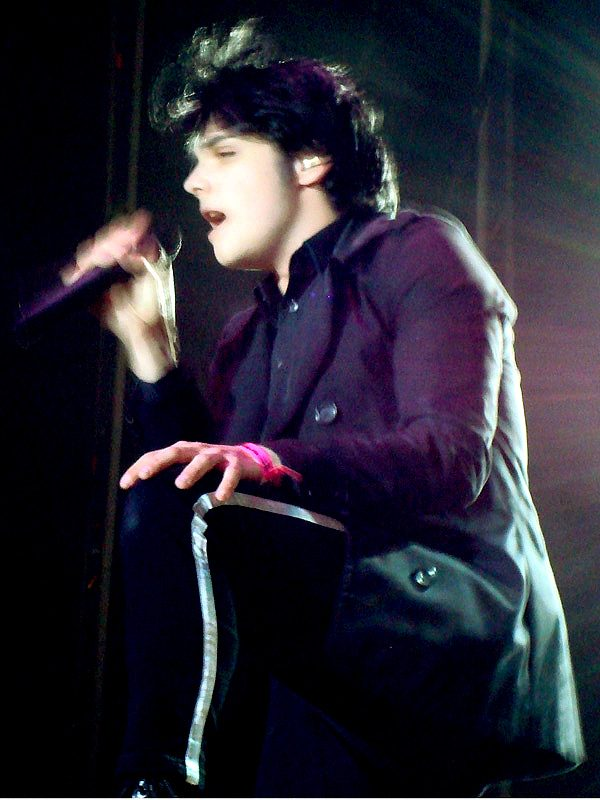

19/10/2026 — Reseña
My Chemical Romance se formó en Nueva Jersey en el año 2001 y, en poco más de una década, pasó de tocar en sótanos a llenar estadios con un sonido que mezclaba punk, rock alternativo y un gusto evidente por el teatro. Su tercer disco, The Black Parade (2006), es probablemente el punto donde esa mezcla alcanzó su forma más ambiciosa: un álbum conceptual sobre la muerte, contado desde la perspectiva de un paciente terminal que recuerda su vida mientras una "banda marcial" lo acompaña hacia el final.

Más allá de lo musical, la estética de la banda —trajes militares, maquillaje blanco y negro, imaginería de desfile fúnebre— se volvió parte central de su identidad, y ayudó a que una generación entera de adolescentes encontrara un lenguaje visual para hablar de ansiedad, duelo y pertenencia. No es casualidad que, casi veinte años después, el disco siga sonando en listas de reproducción y que sus reuniones en vivo sigan agotando entradas en minutos.
Esta página es un proyecto académico hecho para practicar HTML y CSS — no es el sitio oficial de la banda.
Fotos: portada © Lara Janssen (CC0 1.0) — foto de Gerard Way © a_marga (CC BY-SA 2.0), vía Wikimedia Commons.